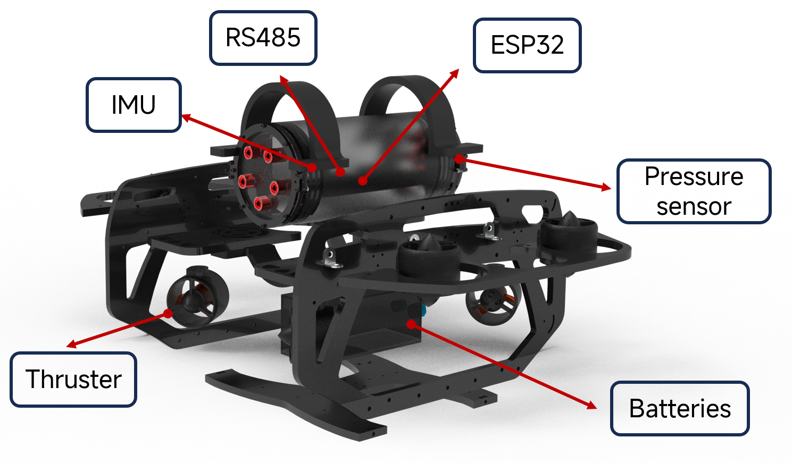
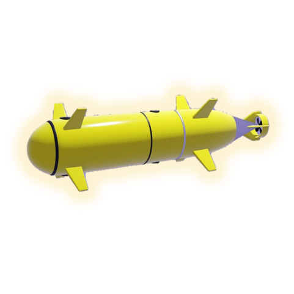
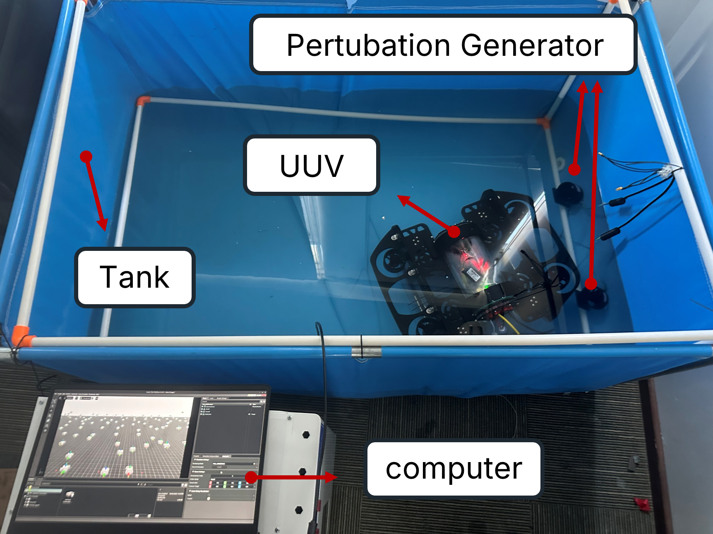
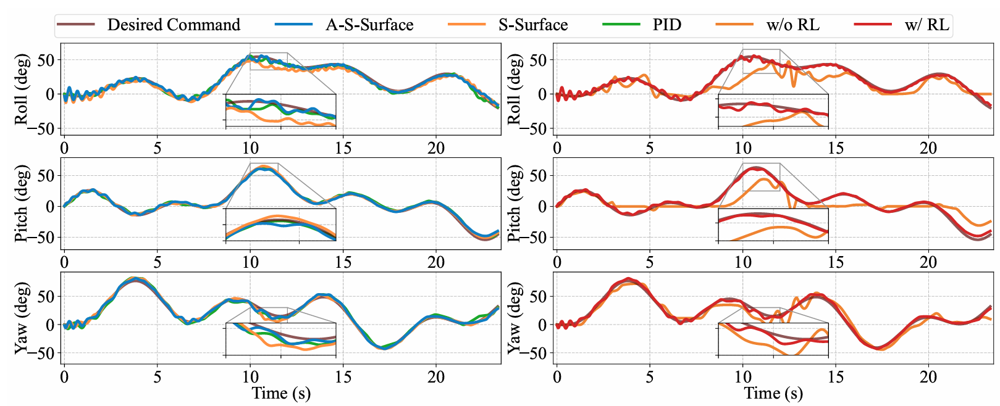
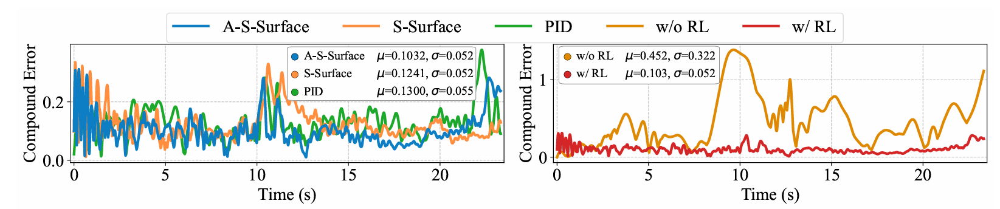

Before training (~20ep)
Parallelized Simulation
After training (~400ep)
- The parallelized simulation environment is built on NVIDIA Isaac Lab, with CUDA/NVIDIA PhysX acceleration.
- We implement MuJoCo-based hydrodynamic modeling, thruster dynamics modeling to capture the salient feature of the complex dynamics of UUV deployment.
- Also, we implement domain randomization (DR) to improve policy generalization and real-world adaptability. During training, key parameters such as the CoB–CoM offset and controller gains are randomly perturbed to account for structural and dynamic variations.
- For RTX4060, a typical low-end consumer-grade GPU, A total of 460 episodes (~3e7 timesteps) are completed in approximately 130 seconds, achieving rapid iteration and high performance.
Image: Thrust (N) vs. Normalized PWM Value (corresponding to 1100–1900 μs) for the Blue Robotics T200 Thruster (16V Voltage).
Real-World Deployment
EasyUUV testbed 3D Model
- Our EasyUUV hardware platform is a compact, low-cost (~$1000 USD), modular testbed designed for RL-based Sim2Real control, featuring 3D-printed ABS and aluminum construction for durability and ease of fabrication.
- It employs eight eight custom-built thrusters with thrust characteristics similar to Blue Robotics T200 in a 6-DOF configuration for precise attitude control, with vibration isolation to reduce sensor interference.
- An ESP32-WROOM microcontroller executes the A-S-Surface controller at 100Hz using simulation- and HIL-calibrated gains, receiving real-time commands via a low-latency RS-485 tether (≤10ms) that also runs the PyTorch JIT-based RL policy.
- Sensor fusion uses a 9-DOF MPU9250 IMU with complementary filtering; the entire system fits in a 30L waterproof case, weighs under 20kg, and supports single-user operation.
- By using off-the-shelf components and closely matching simulation dynamics, EasyUUV enables robust, portable, and research-grade Sim2Real transfer.


Experimental Results
Experiment Setup

Experimental testbed for real-world validation of EasyUUV. (Tank Experiment).
Simulation Results
Simulation videos (left: A-S-Surface, right: A-S-Surface+RL). The results underscore the advantage of integrating RL with adaptive control, especially multi-axis attitude tracking robustness.
Comparison of MSE across two tasks for different controllers, under both RL and non-RL settings (simulation). Left: w/o RL, Right: w/ RL.
 
Comparison of tracking response curves and compund error for different control strategies. Specifically, A-S-Surface converges the fastest and achieves the highest final reward, indicating superior learning efficiency. Besides, S-Surface shows slower convergence and lower reward, while PID performs worst with minimal improvement.
We next examine the effect of DR for RL training. DR notably reduce performance loss, with SDR consistently achieving better out-of-domain performance and stability.
The MSE results under varying DR levels.
Real-World Deployment (Tank)
EasyUUV achieves strong disturbance rejection, can quickly recover from transient disturbances, and also demonstrates certain position-holding capability.
Pertubation Only.
Pertubation + Manual Disturbance.
Comparison of tracking response and compund error curves for different control tasks with and without RL policy (Real-world experiment). (a) Yaw+Roll. (b) Yaw+Pitch.

Tracking response curves of tank experiment (with manual disturbance)
Tracking response curves and LLM-generated controller adjustments under turbulence scenario. LLM generate adjustment recommendation based on visual logs and textual data. The LLM can generate recommendation within 5s, and the performance significantly increase.
Real-World Deployment (Sea Trial)
We conduct outdoor experiment in a estuary at Shenzhen Bay Park, where the turbulent current poses a significant challenge to the attitude control. EasyUUV still achieved reasonable attitude control performance in this environment with strong uncertainty.
BibTeX
@article{xie2025easyuuv,
title={EasyUUV: An LLM-Enhanced Universal and Lightweight Sim-to-Real Reinforcement Learning Framework for UUV Attitude Control},
author={Xie, Guanwen and Xu, Jingzehua and Tang, Jiwei and Huang, Yubo and Zhang, Shuai and Li, Xiaofan},
journal={arXiv preprint arXiv:2510.22126},
year={2025}
}